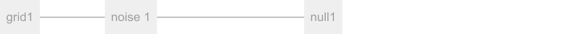
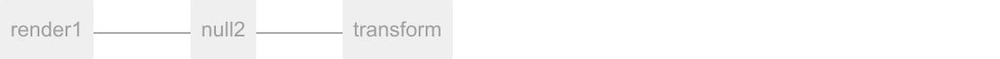
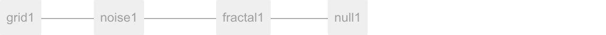
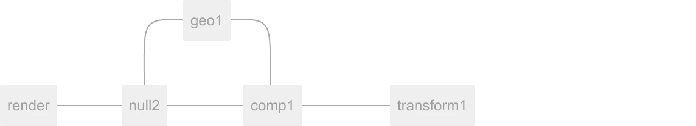
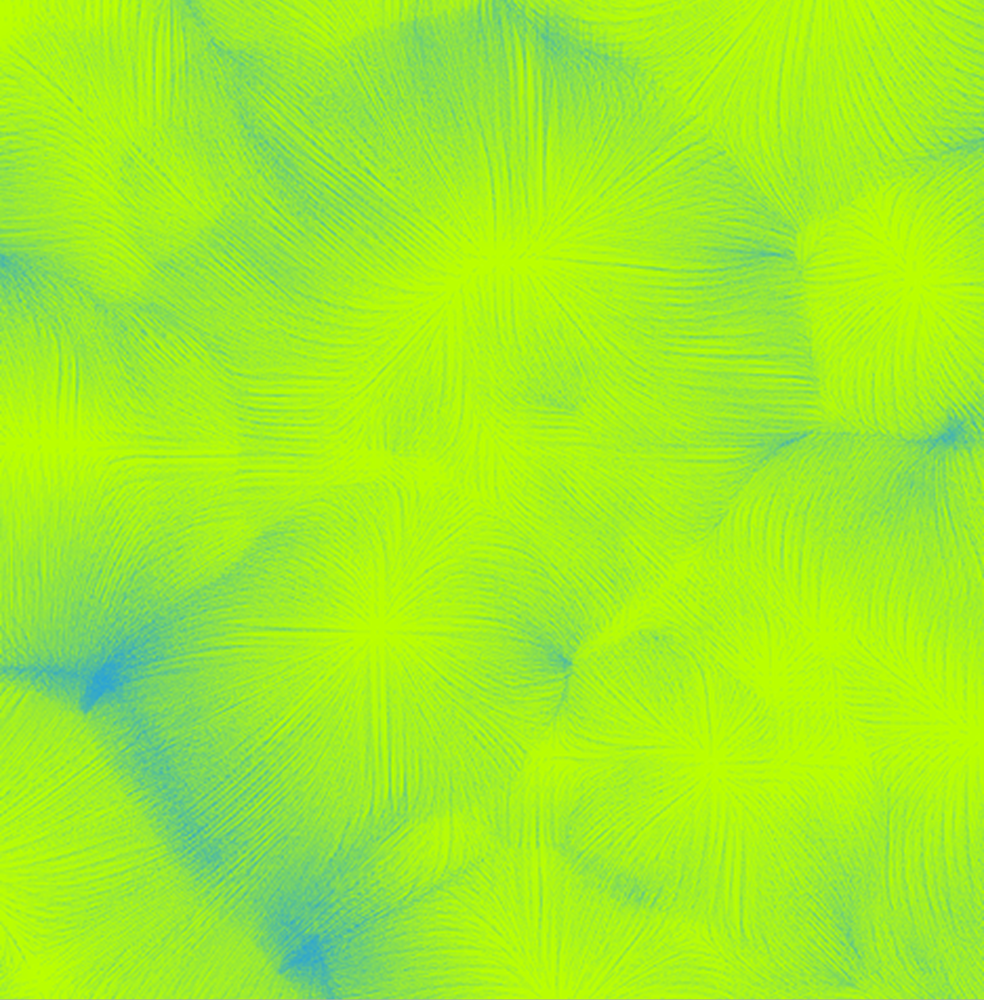
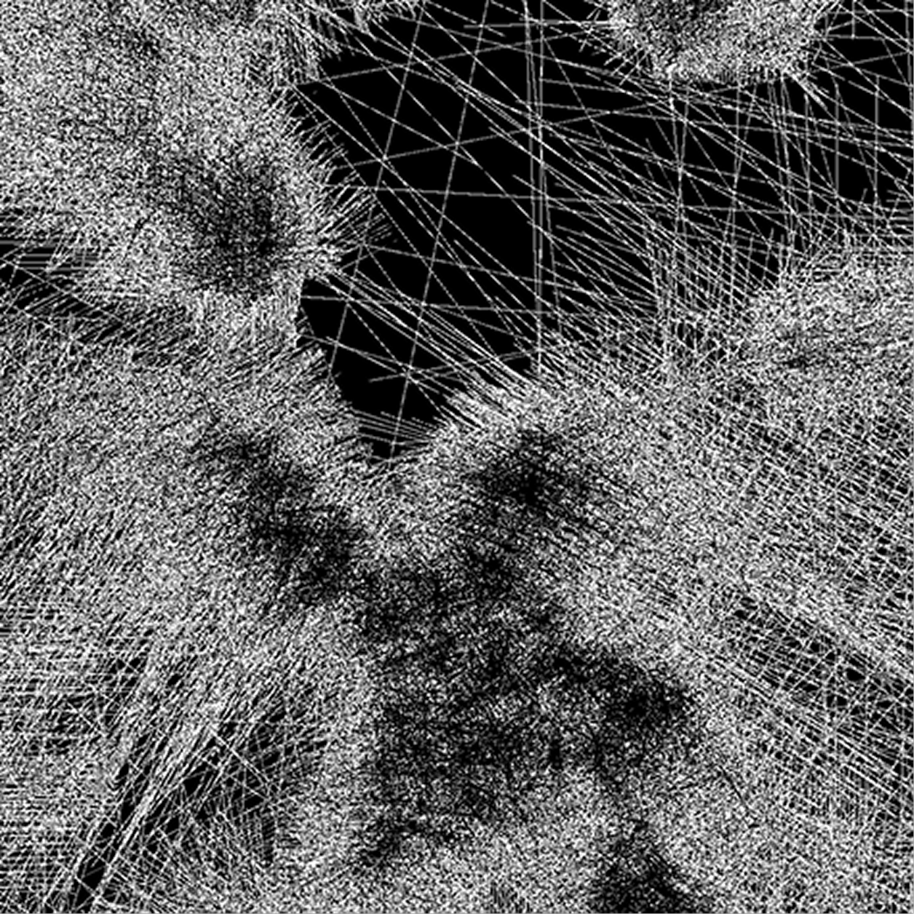
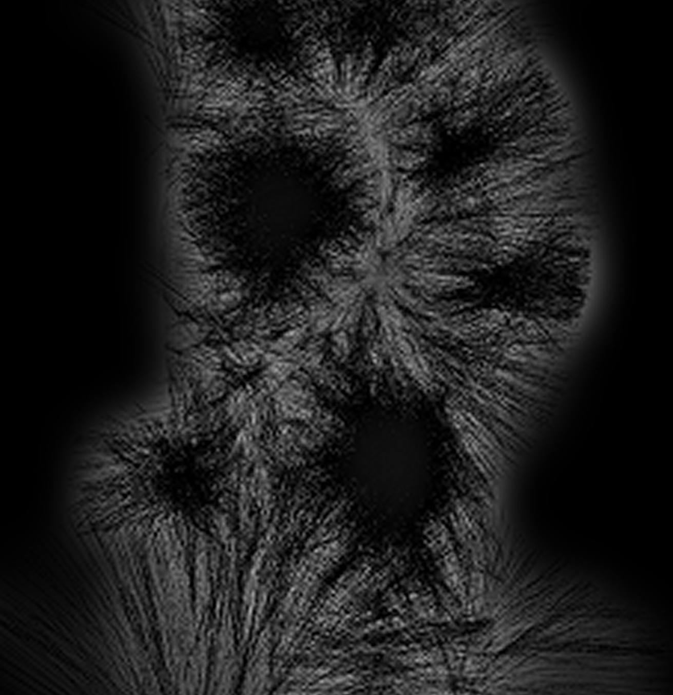

Важная инфа

Тачдизайнер
Новичкам
Туториал
Пушистое облако
В этом туториале ты узнаешь, как создать эффект пушистого текстурированного объекта в TouchDesigner, следуя по нашим шагам.
Настя Абазина
16/02/20025
Основная цепочка
Шаг 1
Для начала нам необходимо добавить Grid и Noise. Ставим ноду Null из семейства SOP отодвигаем ее дальше.
Чекни

Шаг 2
Далее нужно добавить Geo , затем Cam и один источник света Light. К Geo подсоедини Line из семейства МАТ.
Шаг 3
Добавь Render из семейства ТОР и поменяй ему разрешение 1080 на 1350. В качестве фона используй Transform и поставь режим Ол в последнем пункте Comp Over Background Color. Между Render и Transform нужно поставить Null.
Ты можешь поставить в Transform любой цвет фона, но я оставлю черный
Чекни

Шаг 4
Вернись в раздел Grid и поставь значения Size: 2 и 6. Чтобы добавить глубины и деталей, нужно настроить Primitive Type: Nurbs, Rows: 50 и Columns: 20.
Вернись в раздел Noise и выстави настройки шероховатости Roughness: 0.4 и Amplitude: 1.5
Во всех этих параметрах можно выставить свои значения, так результат получится оригинальным
Шаг 5
В Line выключаем параметр Draw Lines и во вкладке Vector включаем Draw Vectors, и меняем параметры Scale: 1.3, Taper Strenght: 0.25, Far Alpha: 0. Во вкладке Setup меняем DN: 0-0.5, DF: 35-40, WN: 0.5
Шаг 6
Вернемся к началу нашей цепочки и между Noise и Null добавь Fractal из семейства TOP, выключи фиксированную границу и выстави Divisions: 2, Smoothness: 2, Scale: 0.25
Чекни

Шаг 7
Чтобы шум смотрелся лучше, добавим еще два оператора из семейства TOP Composite и Blur. В Composite во вкладке Operation выбери режим наложения во вкладке Operation выбери режим наложения Screen. В Blurво вкладке Pre-Shrink, нужно выставить значение: 3, Filter Size: 19.
Чекни

А вот что получилось у редакции
  